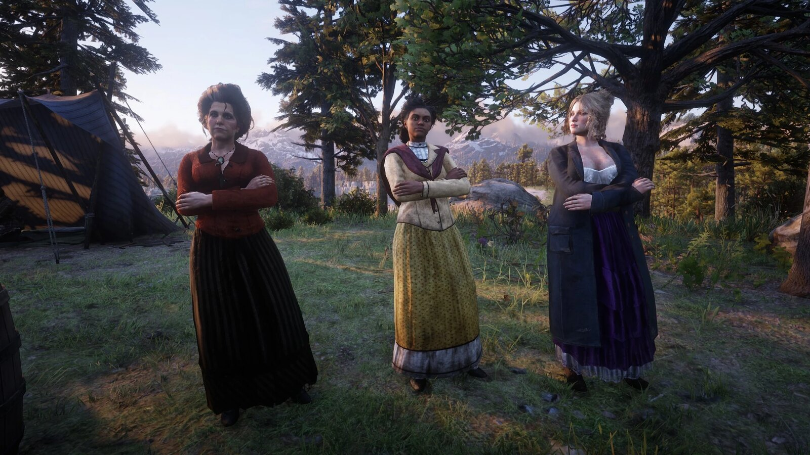
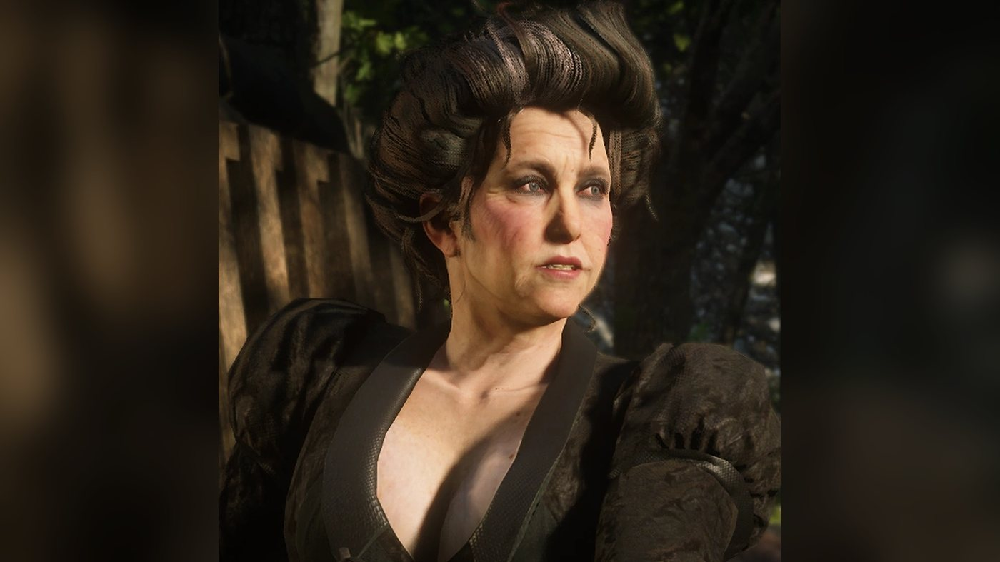
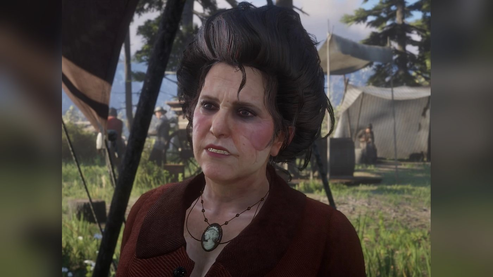
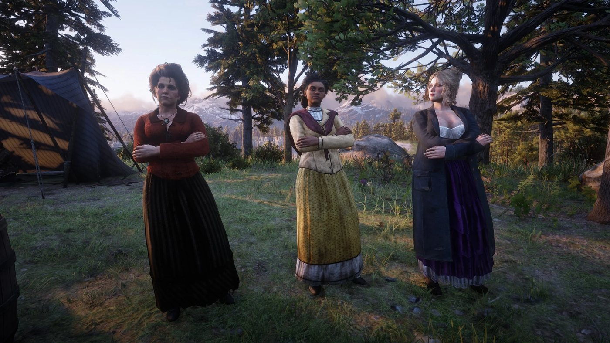
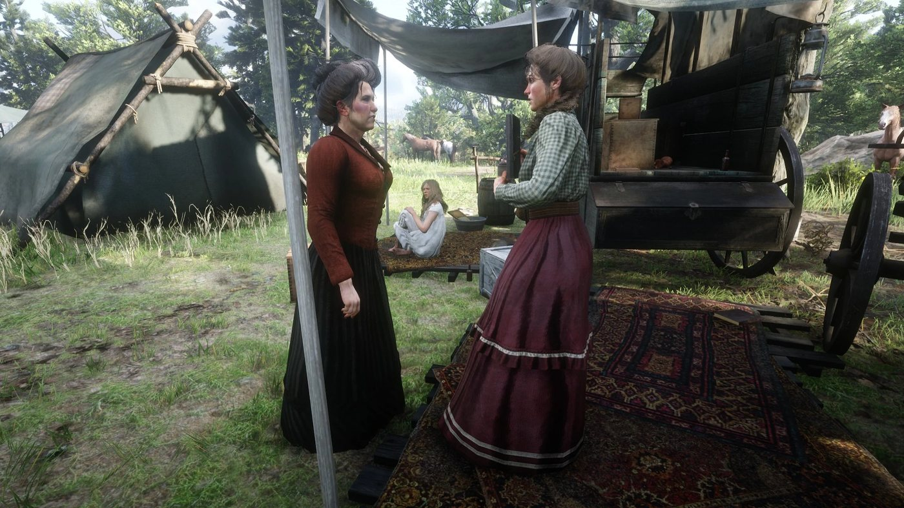
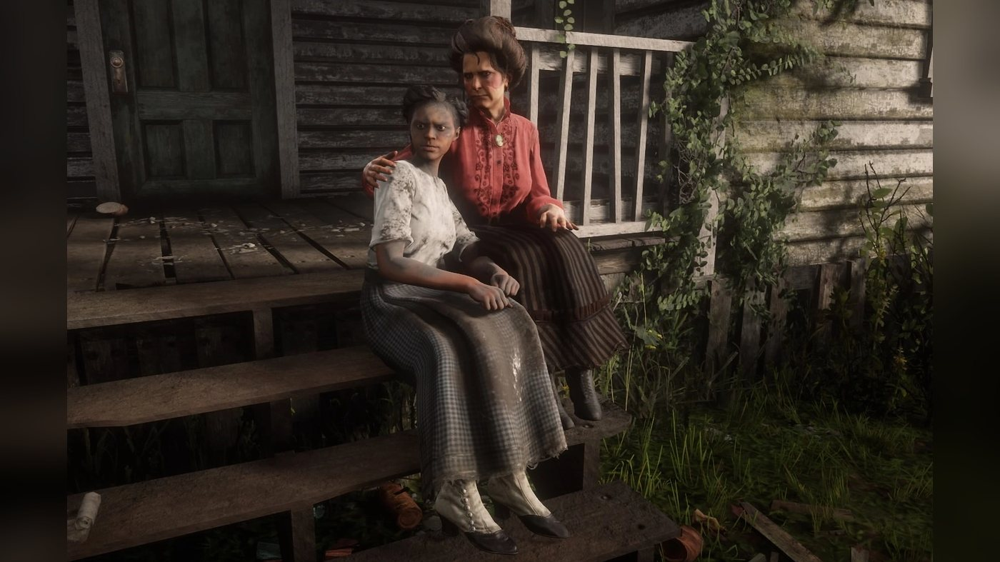
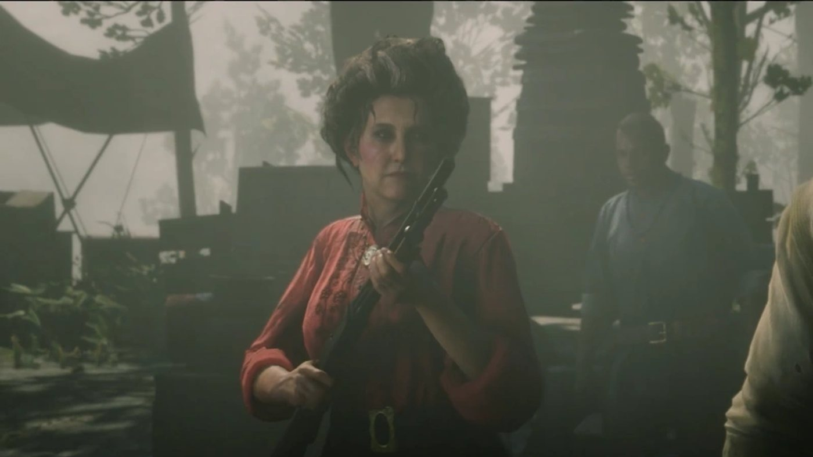
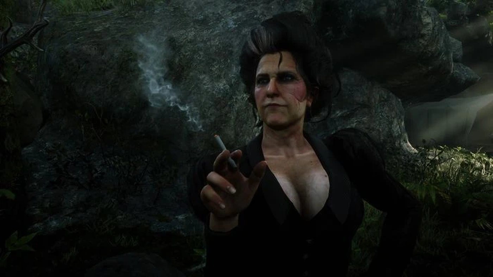
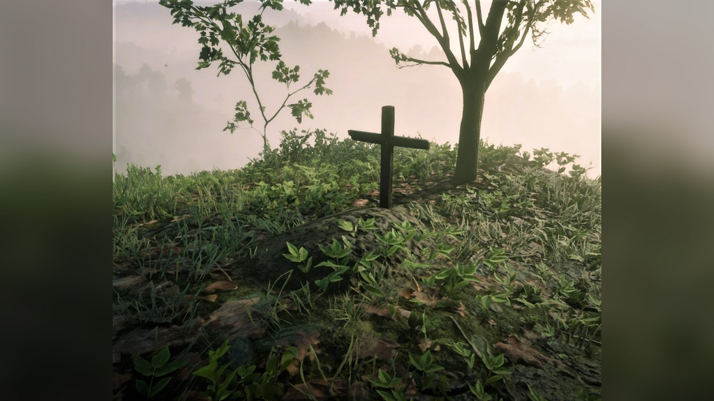

Personnage · Gang Van der Linde
Susan Grimshaw
Susan Grimshaw est un membre de longue date du gang Van der Linde, la femme qui en dirige le camp, et un personnage secondaire de Red Dead Redemption 2 (2018), dont l'action se déroule en 1899. Ancienne compagne de Dutch van der Linde, elle installe chaque nouveau camp avec Simon Pearson et tient les autres à leurs corvées. Au quatrième chapitre, elle délivre Tilly Jackson des frères Foreman avec Arthur Morgan. À la fin du cinquième, elle abat Molly O'Shea, tout juste arrivée à Beaver Hollow, qui prétend avoir dénoncé la bande. Au sixième, elle se range du côté d'Arthur et de John Marston contre Micah Bell, qui la tue.
Elle est interprétée par Kaili Vernoff, une actrice qui a travaillé sur le jeu pendant environ quatre ans et demi.
- Nom
- Susan Grimshaw, le plus souvent appelée Miss Grimshaw
- Naissance
- Non précisée dans le jeu
- Mort
- 1899, à Beaver Hollow, abattue par Micah Bell dans "Red Dead Redemption"
- Statut
- Décédée ; enterrée par Charles Smith à Roanoke Ridge
- Nationalité
- Non précisée dans le jeu (américaine selon le Red Dead Wiki)
- Relations
- Ancienne compagne de Dutch van der Linde (guide officiel)
- Affiliation
- Gang Van der Linde
- Rôle
- Dirige le camp ; installe chaque nouveau camp, avec Simon Pearson
- Jeux
- Red Dead Redemption 2
- Voix
- Kaili Vernoff (voix et capture de jeu)
Biographie
Origines
Les jeux ne donnent ni date ni lieu de naissance pour Susan Grimshaw, et l'histoire ne dit rien de sa vie avant le gang. Le Red Dead Wiki la range parmi les premiers membres du gang Van der Linde, avec Dutch van der Linde, Hosea Matthews et Arthur Morgan ; ce qu'en dit le guide officiel est cité dans la rubrique Personnalité. Elle a été un temps la compagne de Dutch (leur relation est traitée dans la rubrique Relations). En 1899, c'est elle qui fait tourner le camp au quotidien.
Red Dead Redemption 2 (1899)
Chapitre 1 : Colter
Après l'échec du braquage du ferry à Blackwater, le gang fuit dans la neige des montagnes et se réfugie à Colter, une ville minière abandonnée. Dans "Outlaws from the West", dès que le corps de Davey Callander est porté dans la cabane, Susan distribue les tâches : Mary-Beth Gaskill doit allumer le feu, Karen Jones rapporter toutes les couvertures disponibles, et le cuisinier Simon Pearson faire l'inventaire de la nourriture. Dutch annonce ensuite qu'ils resteront peut-être quelques jours et charge Pearson et Miss Grimshaw de transformer l'endroit en camp. À la fin de la mission, Susan répartit les couchages. Elle envoie Dutch vers une cabane où Molly O'Shea le conduira et attribue à Arthur une chambre pour lui seul. Elle installe Micah Bell dans le bâtiment des autres hommes. Micah s'indigne qu'Arthur ait droit à une chambre quand lui hérite d'une couchette à côté de Bill Williamson, et Hosea l'envoie se coucher.
Le Red Dead Wiki fait figurer Susan dans "Enter, Pursued by a Memory", mais la transcription de cette mission ne lui prête aucune réplique. Dans "Eastward Bound", le gang charge ses chariots à Colter, et Susan reproche à Mary-Beth de lire au lieu de donner un coup de main. À l'arrivée au nouveau camp de Horseshoe Overlook, au-dessus de Valentine, elle conduit Arthur jusqu'à la tente que les filles lui ont préparée. Elle lui apprend que la plupart de ses affaires de Blackwater ont été sauvées. Arthur fait remarquer que son argent, lui, ne l'a pas été. Quand il ajoute qu'on peut toujours en gagner d'autre, elle répond qu'il va bien falloir. En repartant, elle s'en prend en termes crus à Tilly Jackson, qui a mal fait son travail.
Chapitre 2 : Horseshoe Overlook
Dans "Exit, Pursued by a Bruised Ego", Arthur explique à Hosea que Susan a envoyé Lenny Summers et Micah en reconnaissance et qu'il les attendait déjà de retour. Dans "Polite Society, Valentine Style", Mary-Beth confie à Arthur que les filles sont coincées au camp depuis deux semaines et que Karen n'est pas loin d'assassiner Grimshaw. Arthur demande si Miss Grimshaw peut se passer d'elles, Karen se moque de ce souci de corvées, et il emmène les femmes et Uncle à Valentine. Dans "We Loved Once and True I", Susan annonce à Arthur qu'une lettre de Mary Linton est arrivée pour lui, de Valentine. D'après la page de la mission, l'une des filles l'a récupérée après que Mary l'a reconnue comme membre du gang.
À la fin de "Who is Not Without Sin", Arthur ramène de Flatneck Station un révérend Swanson ivre et le dépose sur son lit. Susan s'approche et demande ce qui s'est passé. Arthur répond que c'est toujours la même histoire. Elle plaint Swanson, remercie Arthur et promet de garder un œil sur le révérend. Le Red Dead Wiki la mentionne aussi dans "A Strange Kindness", la mission qui conduit au départ du gang vers le sud et Clemens Point, mais la page de la mission ne la nomme pas. Les scènes de camp de ce chapitre, dont la fête pour le retour de Sean MacGuire, sont traitées dans la rubrique Relations.
Chapitre 3 : Clemens Point
À Clemens Point, au bord du lac Flat Iron, les scènes de camp avec Dutch et Molly sont traitées dans la rubrique Relations. À la fin de "Blessed are the Peacemakers", Arthur échappe aux O'Driscoll qui le retenaient prisonnier et rentre au camp grièvement blessé. Dutch appelle Miss Grimshaw et Swanson à l'aide. Susan dit de le mettre au lit, et Dutch lui demande de rester un moment auprès de lui. Elle accepte et rassure Arthur : maintenant qu'il est rentré, il va s'en sortir. Le Red Dead Wiki la mentionne dans "Blood Feuds, Ancient and Modern", l'attaque du manoir Braithwaite, mais la page de la mission ne la nomme pas.
"The Battle of Shady Belle" commence à Clemens Point, où les agents de la Pinkerton Andrew Milton et Edgar Ross entrent dans le camp. Milton propose de laisser aux autres trois jours pour disparaître si Dutch se rend. Dutch lève les mains en feignant d'accepter pendant que le gang charge ses armes, et Susan lui fait savoir qu'il est temps que son nouvel ami s'en aille. Milton promet de revenir avec cinquante hommes, et le gang déménage à Shady Belle, une plantation abandonnée près de Saint-Denis. À l'arrivée du convoi, une fois qu'Arthur et John Marston ont chassé de la maison les Lemoyne Raiders et jeté leurs cadavres dans le marais, Dutch demande à Miss Grimshaw et à Pearson d'opérer leur magie sur le nouveau camp.
Chapitre 4 : Saint-Denis
Dans "No, No and Thrice, No", Arthur fume une cigarette en discutant avec Mary-Beth quand Susan les interrompt. Tilly a été enlevée par les Foreman Brothers, la bande avec laquelle elle chevauchait autrefois, et Susan sait où la trouver : à Radley's House, dans les Scarlett Meadows. Elle prend un revolver et s'y rend avec Arthur en chariot. Ce qu'elle dit en route dépend de l'ordre des missions : si Jack n'a pas encore été retrouvé, elle relève qu'après Jack Marston, c'est au tour de Tilly d'être enlevée ; s'il l'a été, elle remarque qu'on n'a pas vu Kieran Duffy depuis un moment. Sur place, Susan fait la conversation au seul garde posté dehors, puis le poignarde. Arthur entre, prend deux autres Foreman par surprise et trouve Tilly ligotée sur une chaise à l'étage, qu'il détache.
Tilly leur raconte qu'Anthony Foreman et ses hommes l'ont enlevée, et que certains sont partis chasser. On voit Anthony et deux cavaliers s'enfuir par l'arrière de la maison, et Tilly demande qu'on lui ramène Anthony vivant. Arthur et Susan se lancent à leur poursuite à cheval et abattent les deux cavaliers ; d'après les conseils de la page de la mission, si Arthur tarde trop, Susan en abat un elle-même. Arthur attrape Anthony au lasso et le ramène ligoté ; Susan ramène sa monture. Tilly et Susan l'affrontent et lui ordonnent de laisser Tilly tranquille, ce qu'il promet quand Arthur le menace. Selon la page du personnage sur le Red Dead Wiki, Susan pousse Arthur à lui trancher la gorge. La page de la mission indique au contraire qu'elle laisse la décision à Arthur avant de ramener Tilly au camp. C'est le joueur qui choisit si Arthur le tue ou l'épargne.
Dans "Horsemen, Apocalypses", les O'Driscoll attaquent Shady Belle en nombre. D'après la page du personnage, elle fait feu sur les assaillants au fusil à deux coups jusqu'à ce que Dutch l'envoie dans la maison. La page de la mission précise que les membres du camp qui ne combattent pas se précipitent à l'intérieur, et une image de cette page la montre à l'abri dans la maison avec Mary-Beth, Leopold Strauss, Abigail Roberts et Jack. L'assaut repoussé, Dutch charge Susan et Pearson de débarrasser le domaine des cadavres des O'Driscoll, toujours selon la page du personnage.
Chapitre 5 : Guarma
Susan reste en arrière pendant que Dutch, Arthur et les autres sont coincés à Guarma après le braquage de la banque de Saint-Denis. Dans "Fleeting Joy", Arthur retrouve le gang à Lakay, dans le bayou, et la Pinkerton attaque le camp ; la page de la mission ne la nomme pas. Une fois le combat terminé, elle ordonne à tout le monde de plier bagage avant le retour de la Pinkerton, d'après la liste des scènes de camp du wiki. "That's Murfree Country", la dernière mission du chapitre, conduit le gang à Beaver Hollow, une grotte de Roanoke Ridge qu'Arthur et Charles Smith débarrassent des Murfree.
Pendant l'installation du nouveau camp, Uncle arrive avec Molly O'Shea, ivre. Devant le gang, Molly affirme avoir renseigné la Pinkerton sur le braquage de la banque de Saint-Denis, et elle nargue Dutch. Dutch s'apprête à la tuer, et Arthur lui demande de la laisser partir. Susan tire sur Molly au fusil de chasse, en plein ventre, et la tue. Elle rappelle à Arthur que Molly connaissait les règles, puis ordonne à Bill et à Pearson de brûler le corps. Ce meurtre clôt le chapitre. Les réactions du camp, dont Karen qui traite Susan de meurtrière, sont traitées dans la rubrique Relations.
Chapitre 6 : Beaver Hollow
Les échanges de Susan avec Dutch, Tilly et Jack au camp de Beaver Hollow sont traités dans la rubrique Relations. Dans "Red Dead Redemption", dernière mission du chapitre, Arthur apprend de Milton, avant qu'Abigail n'abatte l'agent, que la Pinkerton a cuisiné Molly plus d'une fois sans lui arracher un mot, alors que Micah, arrêté au retour du gang de Guarma, travaille pour elle depuis. Quand Arthur revient au camp, Micah presse Susan et les autres de remballer, et elle répond qu'ils font de leur mieux. Arthur affirme que Micah est le mouchard. Micah dément, et les deux hommes se mettent en joue. John, sorti de prison, reproche à Dutch de l'avoir laissé mourir, et Arthur somme chacun de choisir son camp.
Quand Micah ordonne à Arthur de se taire, Susan braque son fusil sur Micah et lui ordonne de se taire lui-même et de baisser son arme. D'après le Red Dead Wiki, elle est la seule, avec John, à prendre ouvertement le parti d'Arthur. Javier Escuella crie que des agents de la Pinkerton arrivent à toute vitesse. Susan se retourne à l'alerte, et Micah l'abat. Dans la transcription, Dutch n'a pas un mot pour elle : il exige de savoir qui est avec lui et qui le trahit, puis la Pinkerton ouvre le feu. Si Arthur, avec un honneur bas, retourne chercher l'argent, il supplie Dutch, arrivé à temps pour arrêter Micah, de tuer Micah : "Not Molly... not Miss Grimshaw... not even Colm." ("Ni Molly... ni Miss Grimshaw... ni même Colm.") Cette réplique n'existe que dans cette fin. Après la dislocation du gang, Charles Smith revient à Beaver Hollow, récupère les corps de Susan et d'Arthur et les enterre.
Red Dead Redemption 2, épilogue (1907)
Épilogue 1 : Pronghorn Ranch
En 1907, une fois "Simple Pleasures" terminée, John peut se recueillir sur la tombe de Susan. Elle se dresse en haut d'une colline, au-dessus de la voie ferrée, au sud-ouest d'Elysian Pool, à Roanoke Ridge (New Hanover). D'après la page du personnage, son collier est accroché à la croix de bois. Arthur mourant peu après Susan, John est le seul personnage à pouvoir s'y rendre. Elle fait partie des tombes à visiter pour le trophée Paying Respects.
Personnalité
La description officielle publiée par Rockstar le 6 septembre 2018 (version française) : « Administratrice et juge incontestée du camp. Sans Susan, tout serait parti à vau-l'eau il y a des années. Tenace et dotée d'une volonté de fer, elle ne laisse rien passer. » Une page de personnage tirée d'un guide officiel, reproduite sur le Red Dead Wiki, va plus loin : "She used to be in a relationship with Dutch back in the old days and, even after that ended, they've remained strong partners in crime. Years as an outlaw have left her a little jaded but she wouldn't have it any other way." (elle a eu une liaison avec Dutch au bon vieux temps et, même après la rupture, ils sont restés de solides complices ; ses années de hors-la-loi l'ont un peu blasée, mais elle ne voudrait pas d'une autre vie). La même page précise qu'elle fait partie du gang depuis aussi longtemps qu'Arthur.
Au camp, elle donne les ordres et attend du travail en retour. Elle attribue les chambres et les tentes, renvoie les femmes à leurs corvées et houspille quiconque elle surprend à ne rien faire, avec pour cibles habituelles les plus jeunes, Karen, Mary-Beth et Tilly (voir Relations). Au coin du feu, elle se plaint que les filles du camp sont paresseuses, insolentes et imbues d'elles-mêmes, regrette que Dutch lui interdise de leur donner le fouet, et assure qu'on l'a elle-même éduquée ainsi et qu'elle s'en porte bien. Elle confie aussi à Arthur qu'elle est trop vieille pour des voyages comme la traversée des Grizzlies. D'après le Red Dead Wiki en français, elle sait que les femmes du camp se moquent d'elle, dit qu'elle en faisait autant quand elle était belle, et leur donne raison. Selon le wiki anglais, elle confie dans une conversation de camp être triste de la mort de Davey Callander.
Dans ses propres mots
Le Red Dead Wiki ouvre sa page sur une réplique qu'il accompagne d'un extrait sonore du jeu : "I swear half of you would just rot in your own filth if nobody kept you in check." (je vous jure, la moitié d'entre vous pourrirait dans sa propre crasse si personne ne vous tenait). La liste de citations du wiki retient aussi une courte phrase adressée à Arthur : "My camp, my rules." (mon camp, mes règles). D'après la page du personnage sur le Red Dead Wiki, quand Tilly est enlevée et qu'Arthur fait remarquer qu'elle tient finalement à ces filles, elle répond par une phrase que reprend la liste de citations du wiki : "Of course I care. About all of you fools. Some just require a firmer hand than others, you especially." (évidemment que j'y tiens. À vous tous, bande d'idiots. Il y en a juste qui ont besoin d'une main plus ferme que d'autres, toi le premier).
Noms
La plupart des membres du gang l'appellent par son nom de famille. Dans les transcriptions des missions, Arthur, Dutch et Micah lui disent Miss Grimshaw. Le Red Dead Wiki en français retient Miss Grimshaw comme surnom. Le wiki anglais relève que, comme Pearson, on l'appelle rarement par son prénom. Dans "Polite Society, Valentine Style", Mary-Beth parle d'elle en disant simplement Grimshaw. Elle use de la même formalité envers les autres : Mr. Morgan, Mr. Bell, Mr. Pearson, Miss Gaskill, Miss Jones, Miss Jackson et Miss O'Shea.
Apparence
D'après le Red Dead Wiki, Susan est une femme d'âge mûr aux cheveux gris, autrefois blonds, et aux yeux bleus, peu maquillée, les cheveux tirés en chignon serré. Le wiki lui prête deux tenues habituelles : une robe noire avec un haut noir à manches longues, ou un chemisier rose porté sur la robe, avec des bottines noires. Avec le chemisier, elle porte un pendentif ovale. Le wiki ajoute que, comme le reste du gang, elle change de tenue et de coiffure au fil du jeu.
Relations

Dutch van der Linde
Susan et Dutch ont formé un couple et sont restés associés après la rupture, selon le guide officiel (cité dans Personnalité). Il lui confie l'organisation du camp et fait appel à elle quand Arthur revient blessé du camp de Colm (voir la biographie). Un soir au coin du feu, à Horseshoe Overlook, elle se dit certaine que Dutch les tirera d'affaire et assure n'en avoir jamais douté ; Bill l'approuve, et elle ajoute que Dutch est l'Américain idéal. À Clemens Point, elle confie à Dutch que Molly est malheureuse et que son caractère pourrait poser problème ; il balaie son inquiétude. Un autre soir, il met de la musique devant sa tente et l'invite à danser, ce qu'elle accepte. D'après le Red Dead Wiki, Arthur dit que Dutch a un faible pour elle.
À Beaver Hollow, elle demande à Dutch ce qu'ils font et lui dit que, pour l'instant, il faut bouger et continuer à bouger. Dutch s'emporte, la traite d'idiote et crie qu'il leur faut de l'argent, sans quoi ils sont tous morts. Quand Micah l'abat, elle a pris le parti d'Arthur et de John (voir la biographie).

Arthur Morgan
Susan appelle Arthur Mr. Morgan. D'après le Red Dead Wiki, quand il s'absente longtemps du camp, elle peut lui en faire le reproche ; il répond qu'il est un vagabond, et elle réplique qu'elle le sait, en l'appelant fiston. Après sa chambre à Colter et sa tente à Horseshoe Overlook (voir la biographie), elle lui trouve une place à Shady Belle : elle a installé ses affaires dans une chambre à l'étage, pensant que cela lui ferait plaisir. Arthur la remercie, non sans une pique sur les alligators et les moustiques du marais. Après le sauvetage de Sean, selon le wiki, elle félicite Arthur de l'avoir ramené et lui rappelle que la loyauté compte. À Shady Belle, après l'enlèvement de Jack, Arthur lui demande de garder un œil sur Abigail, et elle accepte.
Elle veille Arthur après sa captivité chez Colm, part avec lui libérer Tilly dans "No, No and Thrice, No" et se range à ses côtés contre Micah à Beaver Hollow (voir la biographie).

Tilly Jackson
Susan se montre dure avec Tilly dans les premiers chapitres. Elle rabroue Tilly sur son travail dès l'arrivée à Horseshoe Overlook (voir la biographie). Dans une autre scène, elle attrape Tilly par l'oreille ; quand Tilly dit ne pas se sentir bien, Susan rétorque "I don't care what you feel, girl. Get ready!" (je me fiche de ce que tu ressens, ma fille. Prépare-toi !) et l'envoie au travail. Devant Arthur, elle compare les filles à des princesses de contes de fées ; Arthur lui rétorque qu'elles ont dû trouver leur bonne fée. Autour d'une partie de dominos, à Clemens Point, Tilly plaisante avec Arthur sur l'idée de tuer Miss Grimshaw, et Arthur répond que Dutch préfère éviter les meurtres au camp.
À Shady Belle, Tilly prévient Susan que le nouveau camp se trouve près d'une planque des frères Foreman. Quand Tilly est enlevée, Susan organise son sauvetage avec Arthur (voir la biographie) ; d'après le Red Dead Wiki, elle l'appelle "ma fille" pendant la mission, et leurs rapports s'améliorent ensuite. Au chapitre de Beaver Hollow, selon le wiki, elle rassure Tilly sur la situation du gang et lui dit qu'elle est devenue une belle jeune femme.

Karen Jones
Kaili Vernoff expliquait à GameFragger en février 2019 que Karen est celle qui tient vraiment tête à Susan. À Horseshoe Overlook, Karen rejoint Susan à table, lui demande si son repas est bon et lui raconte qu'à Colter elle a envisagé de la manger. Elle détaille les plats possibles, Pearson et elle n'ayant pas réussi à choisir le meilleur, et Susan finit par quitter la table. À Clemens Point, quand Susan la trouve ivre à la table de poker, Karen répond qu'elle est en train d'accoucher, lui dit qu'elle ne se laissera pas malmener et qu'à moins de la nourrir, Susan n'a qu'à se taire. Pendant qu'elle coud avec Tilly, Karen se plaint des remontrances de Susan, puis lui lance qu'elle étudie l'alchimie. Les deux femmes chantent pourtant ensemble (voir Compétences). Après la mort de Molly à Beaver Hollow, Karen traite Susan de meurtrière ; Susan répond que Molly a enfreint les règles.

Mary-Beth Gaskill
À Horseshoe Overlook, Susan rappelle à Mary-Beth qu'elle a déjà tué des gens pour avoir trahi la bande ; Mary-Beth demande si lire est une trahison, et Susan répond que le problème n'est pas la lecture mais l'oisiveté. Dans une autre scène, Mary-Beth assure qu'elle a travaillé, et Susan la gifle avant de lui ordonner d'en faire plus. D'après le Red Dead Wiki, Susan reprend Mary-Beth et Lenny quand ils se moquent de la cuisine de Pearson, en leur demandant de surveiller leurs manières, puisque Pearson prend bien soin d'eux. À Shady Belle, après le retour de Jack, elle répond à Mary-Beth qu'elle ne sait pas où est Kieran.

Molly O'Shea
À Clemens Point, Susan fait part à Dutch de son inquiétude au sujet de Molly, malheureuse (voir Dutch van der Linde). À Lakay, d'après le Red Dead Wiki, elle peut évoquer la disparition de Molly depuis le braquage de la banque. À Beaver Hollow, Susan tue Molly pour un aveu qui se révèle faux (voir la biographie).

Micah Bell
Autour des dominos, à Horseshoe Overlook, Micah dit à Susan qu'elle a été quelqu'un, il y a bien longtemps. Elle y voit un compliment, jusqu'à ce qu'il évoque les fleurs qui fanent, et elle s'en va furieuse. Dans une autre scène, alors qu'elle nettoie une Carbine Repeater, il lui confie que ce spectacle l'échauffe ; elle braque l'arme sur lui et lui conseille de ne pas jouer les séducteurs avec elle. À Clemens Point, il lui dit qu'il l'imagine belle autrefois, et rit quand elle s'éloigne. Quand Micah tourmente Swanson, Susan lui ordonne de laisser le révérend tranquille. À Beaver Hollow, il l'abat pendant l'affrontement (voir la biographie).

Simon Pearson
Pearson est son associé pour l'installation de chaque camp (voir Compétences). À Shady Belle, elle passe le voir au kiosque ; il énumère tout ce qu'il a accompli en mer et se plaint de vivre désormais dans un marais, à attendre de se faire tuer. Susan lui fait remarquer que l'apitoiement ne lui ressemble pas ; il met cela sur le compte de la boue et retourne au travail. Elle défend sa cuisine face à Mary-Beth et Lenny (voir Mary-Beth Gaskill), même si, d'après le Red Dead Wiki, elle demande à Arthur de trouver de l'origan pour l'assaisonner.

Orville Swanson
Susan prend Swanson en charge quand Arthur le ramène ivre dans "Who is Not Without Sin" (voir la biographie) ; "Poor bastard" (pauvre diable), lâche-t-elle. Elle le protège du harcèlement de Micah (voir Micah Bell).

Uncle
À Horseshoe Overlook, Uncle invite Susan à passer la soirée en ville avec lui ; elle accepte, puis se ravise en comprenant qu'il ne veut que de l'argent. D'après le Red Dead Wiki, dans une autre conversation au camp, Uncle la taquine en lui disant qu'elle est une femme de valeur cachée derrière une mine aigre et une langue acérée, qu'il compare aux épines d'une rose. Ils chantent souvent ensemble (voir Compétences).

Abigail Marston
À Horseshoe Overlook, Susan reproche à Abigail de se donner de grands airs et lui dit qu'elle doit gagner sa place ; Abigail répond qu'elle veut bien chanter pour son repas, mais qu'elle ne vendra plus son corps. Au coin du feu, Abigail se plaint d'être trop vieille pour vivre sous la tente en pleine nature, surtout quand Susan mange pour trois. D'après le Red Dead Wiki, elle traite Susan de vieille harpie. Après l'enlèvement de Jack, Arthur demande à Susan de veiller sur Abigail (voir Arthur Morgan).

John Marston
À Colter, pendant que John se remet de l'attaque des loups dans la cabane principale, Arthur vient le taquiner ; Susan lui demande ce qu'il veut encore et lui ordonne de laisser John tranquille. À Beaver Hollow, tous deux se rangent du côté d'Arthur contre Micah (voir la biographie).

Sean MacGuire
À la fête du retour de Sean, d'après le Red Dead Wiki, Sean dit apprécier Susan même si elle est impitoyable sur le travail (la chanson de ce soir-là figure dans Compétences). Après sa mort à Rhodes, Karen et elle lui dédient "A Prisoner for Life" à Shady Belle.

Hosea Matthews
À Horseshoe Overlook, Susan annonce à Dutch et à Hosea que leurs tentes seront bientôt prêtes. D'après le Red Dead Wiki, elle transmet plus tard à Arthur qu'Hosea a trouvé une piste à Emerald Ranch.

Lenny Summers
À Colter, Susan installe Lenny dans le logement commun avec Micah, Javier, Charles et Bill. Elle l'envoie plus tard en reconnaissance avec Micah (voir la biographie).

Charles Smith
À Clemens Point, Susan chante "Dance by the Light of the Moon" au coin du feu, accompagnée par Charles à l'harmonica. Charles est auprès des Wapiti quand elle est tuée ; après la dislocation du gang, il revient à Roanoke Ridge et l'y enterre (voir la biographie).

Javier Escuella
Javier accompagne à la guitare plusieurs des chansons de Susan au camp (voir Compétences). À Beaver Hollow, c'est son avertissement, l'arrivée des Pinkerton, qui lui fait tourner la tête (voir la biographie).

Jack Marston
À Beaver Hollow, Jack fait le tour du camp en appelant Cain, le chien disparu, et demande à Susan si elle l'a vu. Elle répond que non, mais lui assure que c'est un vagabond et qu'il finira par revenir.

Leopold Strauss
À Beaver Hollow, Susan et Pearson dorment près de Strauss ; si Arthur vient l'affronter de nuit, tous deux se réveillent et assistent, effrayés, à la colère d'Arthur. D'après le Red Dead Wiki, Susan, comme Swanson, approuve la décision d'Arthur de chasser Strauss, et lui dit ensuite qu'elle sait qu'il a eu raison et qu'elle ne protestera pas.

Josiah Trelawny
À Clemens Point, Susan interrompt Trelawny et Karen, qui parlent d'un livre, pour demander à Karen si elle compte travailler un jour. Trelawny répond par un tour de magie et fait surgir un corbeau de sa main. Susan s'en va écœurée, et Karen éclate de rire.

Mary Linton
Susan annonce à Arthur qu'une lettre de Mary est arrivée (voir la biographie). D'après le Red Dead Wiki, elle dit plus d'une fois qu'elle ne l'aime pas, ce qui agace Arthur.

Andrew Milton
Quand Milton et Ross entrent dans le camp de Clemens Point, le gang prend les armes et Susan fait comprendre à Dutch qu'il est temps que son nouvel ami s'en aille (voir la biographie ; la réplique figure dans Citations).

Sadie Adler
D'après le Red Dead Wiki, Sadie est la femme du camp avec qui Susan a le moins affaire. Toutes deux font partie des membres qui attendent à Lakay pendant que le groupe de Dutch est à Guarma.
Compétences, armes et chevaux
Compétences et armes
La tenue du camp
Susan installe chaque nouveau camp, avec Pearson. La liste des personnages du jeu sur Wikipédia en fait leur tâche commune, et Dutch la leur confie à tous deux dans l'histoire (voir la biographie). Elle répartit les couchages, met chacun au travail et rappelle à Arthur de continuer à alimenter la caisse commune. D'après le Red Dead Wiki, elle commente la conduite récente d'Arthur quand il passe au camp, qu'il ait tué des innocents, négligé ses dons ou traîné entre les tentes. À Beaver Hollow, elle peut aussi lui apprendre que la caisse des dons a disparu parce que quelqu'un l'a cassée.
Si Arthur reste trop longtemps sans se laver, elle prend les choses en main et le récure dans un tonneau d'eau au camp. Elle n'est pas disponible au camp tant que "No, No and Thrice, No" attend d'être jouée, pas plus que Tilly et Mary-Beth.
Chansons
Susan chante à la table de poker et au coin du feu, surtout avec Karen et souvent avec Uncle. La page des événements de camp du Red Dead Wiki recense "Come, Bustle, Bustle" et "One Eyed Riley" (avec Uncle et Karen), "I Wouldn't Marry" (avec Karen) et "Wild Free Rover" (à la fête du retour de Sean, avec Uncle, Sean et Karen) à Horseshoe Overlook ; "Dance by the Light of the Moon" à Clemens Point ; puis "A Prisoner for Life", "The Sailor Boy" et "The Heartland Stage Company" (avec Karen et Uncle) à Shady Belle.
Armes
Le Red Dead Wiki lui attribue un Cattleman Revolver, un Pump-Action Shotgun, une Carbine Repeater et un Double-Barreled Shotgun, et note que dans les cinématiques on la voit le plus souvent avec un fusil de chasse. D'après la page du personnage, elle se sert brièvement d'un fusil à deux coups lors de l'attaque des O'Driscoll contre Shady Belle. C'est aussi un fusil qu'elle utilise contre Molly et contre Micah à Beaver Hollow ; pour le sauvetage de Tilly, elle prend un revolver et se sert d'un couteau (voir la biographie). La carabine apparaît dans une scène de camp avec Micah (voir Relations).
Missions
Les éditions anglaise et française du Red Dead Wiki recensent toutes deux 13 missions principales de Red Dead Redemption 2 pour Susan, de la fuite vers Colter à la dernière mission du chapitre 6. Elle en confie une, "No, No and Thrice, No", conjointement avec Mary-Beth Gaskill d'après la page de la mission. Quatre missions de la liste ne la montrent ni dans leur page ni dans leur transcription : le tableau le signale au cas par cas. Un second tableau ajoute trois missions où elle est seulement citée ou ne fait qu'une brève apparition au camp.
Red Dead Redemption 2, chapitres 1 à 6
| Mission | Chapitre | Rôle de Susan |
|---|---|---|
| Outlaws from the West | 1. Colter | Met Mary-Beth, Karen et Pearson au travail dans la cabane de Colter, puis répartit les couchages, ce qui déclenche les protestations de Micah. |
| Enter, Pursued by a Memory | 1. Colter | Citée par le wiki. La transcription ne lui prête aucune réplique. |
| Eastward Bound | 1. Colter | Presse le chargement à Colter, puis montre sa tente à Arthur à Horseshoe Overlook et rabroue Tilly. |
| Who is Not Without Sin | 2. Horseshoe Overlook | Prend en charge Swanson quand Arthur le ramène ivre. |
| A Strange Kindness | 2. Horseshoe Overlook | Citée par le wiki. La page de la mission ne la nomme pas, et le wiki n'en a pas la transcription. |
| Blessed are the Peacemakers | 3. Clemens Point | Appelée par Dutch quand Arthur rentre blessé ; reste à son chevet. |
| Blood Feuds, Ancient and Modern | 3. Clemens Point | Citée par le wiki. La page de la mission ne la nomme pas, et le wiki n'en a pas la transcription. |
| The Battle of Shady Belle | 3. Clemens Point | Fait savoir à Dutch que Milton doit partir ; à Shady Belle, Dutch lui confie l'installation du camp avec Pearson. |
| No, No and Thrice, No | 4. Saint-Denis | Donneuse de la mission avec Mary-Beth. Accompagne Arthur à Radley's House pour libérer Tilly des Foreman Brothers et tue le garde. |
| Horsemen, Apocalypses | 4. Saint-Denis | Se met à l'abri dans la maison pendant l'attaque des O'Driscoll contre Shady Belle. |
| Fleeting Joy | 5. Guarma | Citée par le wiki pour les retrouvailles et l'attaque de la Pinkerton à Lakay. La page de la mission ne la nomme pas. |
| That's Murfree Country | 5. Guarma | Abat Molly O'Shea à Beaver Hollow et fait brûler le corps. |
| Red Dead Redemption | 6. Beaver Hollow | Se range du côté d'Arthur et de John et braque son fusil sur Micah, qui l'abat. |
Autres missions
| Mission | Chapitre | Rôle de Susan |
|---|---|---|
| Polite Society, Valentine Style | 2. Horseshoe Overlook | Seulement citée : Mary-Beth dit que Karen est prête à l'assassiner, et Arthur demande si elle peut se passer des filles. |
| Exit, Pursued by a Bruised Ego | 2. Horseshoe Overlook | Seulement citée : Arthur explique à Hosea qu'elle a envoyé Micah et Lenny en reconnaissance. |
| We Loved Once and True I | 2. Horseshoe Overlook | Annonce à Arthur, au camp, qu'une lettre de Mary Linton est arrivée. |
Personnages notables tués par Susan
Le Red Dead Wiki attribue deux meurtres à Susan : un membre anonyme des Foreman Brothers et Molly O'Shea. La page de la mission "No, No and Thrice, No" précise les circonstances du premier et ajoute qu'elle peut abattre l'un des cavaliers pendant la poursuite.
| Nom | Mission | Circonstances |
|---|---|---|
| Garde des Foreman Brothers | No, No and Thrice, No | Poignardé par Susan devant Radley's House, après qu'elle a engagé la conversation. |
| Cavalier des Foreman Brothers | No, No and Thrice, No | Selon le joueur. L'un des deux hommes qui fuient avec Anthony Foreman est abattu par Susan si Arthur tarde à les tuer tous les deux, ce qui fait échouer un objectif de la médaille d'or. |
| Molly O'Shea | That's Murfree Country | Tuée d'un coup de fusil au ventre à Beaver Hollow, après avoir affirmé avoir renseigné la Pinkerton. |
Citations
Les répliques ci-dessous sont reproduites telles qu'elles sont prononcées dans le jeu, en anglais, avec la mission et la personne à qui elles s'adressent. Celles des missions dont le Red Dead Wiki publie la transcription y sont vérifiées ; les quatre répliques visant les Foreman Brothers au chapitre 4, dont la mission n'a pas de transcription, proviennent de l'encadré de citation de la page "No, No and Thrice, No" et de la liste de citations du wiki. Les répliques prononcées au camp hors des missions figurent dans les rubriques Personnalité et Relations et ne sont pas reprises ici.
Red Dead Redemption 2, chapitres 1 à 3
Miss Gaskill... get that fire lit quick. Miss Jones, bring in whatever blankets we have. Mr. Pearson, see what we've got in terms of food.
Outlaws from the West (RDR2, chapitre 1), dans la cabane de Colter, à Mary-Beth, Karen et Pearson. Traduction : « Mademoiselle Gaskill... allumez-moi ce feu, et vite. Mademoiselle Jones, apportez toutes les couvertures qu'on a. Monsieur Pearson, voyez ce qu'il nous reste à manger. »Mr. Bell, you're with the fellers over there.
Outlaws from the West (RDR2, chapitre 1), à Micah, pendant la répartition des cabanes. Traduction : « Monsieur Bell, vous êtes avec les gars, là-bas. »Oh, for Lord's sake. Put that book away and go help. Oh... Mary-Beth.
Eastward Bound (RDR2, chapitre 1), à Mary-Beth, pendant le chargement des chariots à Colter. Traduction : « Oh, pour l'amour du ciel. Rangez-moi ce livre et allez aider. Oh... Mary-Beth. »It should be, most of your stuff from Blackwater got saved.
Eastward Bound (RDR2, chapitre 1), à Arthur, qui se dit sûr que tout ira bien pour sa tente. Traduction : « Ça devrait, la plupart de vos affaires de Blackwater ont été sauvées. »Miss Jackson... I've seen shit with more common sense than you. Do it properly.
Eastward Bound (RDR2, chapitre 1), à Tilly, à propos de son travail à Horseshoe Overlook. Traduction : « Mademoiselle Jackson... j'ai vu de la merde avec plus de bon sens que vous. Faites-le correctement. »Well, thank you, Mr. Morgan. I'll keep an eye on him.
Who is Not Without Sin (RDR2, chapitre 2), à Arthur, qui vient de ramener Swanson au camp. Traduction : « Eh bien, merci, monsieur Morgan. Je garderai un œil sur lui. »Of course. You'll be okay, Mr. Morgan... you're home.
Blessed are the Peacemakers (RDR2, chapitre 3), quand Dutch lui demande de veiller Arthur, blessé. Traduction : « Bien sûr. Ça va aller, monsieur Morgan... vous êtes chez vous. »I think your new friend should leave now, Dutch.
The Battle of Shady Belle (RDR2, chapitre 3), à propos de l'agent Milton, à Clemens Point. Traduction : « Je crois que ton nouvel ami devrait s'en aller, Dutch. »
Red Dead Redemption 2, chapitre 4 : les Foreman Brothers
If they've touched a single hair on that girl's head, I will eviscerate the sons of bitches.
À propos des Foreman Brothers, qui ont enlevé Tilly (liste de citations du Red Dead Wiki). Traduction : « S'ils ont touché à un seul cheveu de cette petite, j'étripe ces fils de putes. »Well, I don't know what they've been doing here... but I can tell you what they're going to be doing here... dying.
No, No and Thrice, No (RDR2, chapitre 4), à Arthur, qui se demande ce que les Foreman Brothers font dans la région (page de la mission). Traduction : « Je ne sais pas ce qu'ils faisaient ici... mais je peux vous dire ce qu'ils vont y faire... mourir. »You've said your last words.
En coupant la parole à un membre des Foreman Brothers, qu'elle tue ensuite (liste de citations du Red Dead Wiki). Traduction : « Vous venez de prononcer vos dernières paroles. »History is never done.
À Anthony Foreman (liste de citations du Red Dead Wiki). Traduction : « L'histoire n'est jamais finie. »
Red Dead Redemption 2, chapitre 6
Well, we're doing our best.
Red Dead Redemption (RDR2, chapitre 6), à Micah, qui lui ordonne de remballer plus vite. Traduction : « Eh bien, on fait de notre mieux. »No. You be quiet, Mr. Bell... and put down your gun.
Red Dead Redemption (RDR2, chapitre 6), ses derniers mots, en braquant son fusil sur Micah pendant l'affrontement. Traduction : « Non. C'est vous qui allez vous taire, monsieur Bell... et baisser votre arme. »
Conception et interprétation
Le casting
Susan est interprétée par Kaili Vernoff, qui lui prête sa voix et assure sa capture de jeu. Actrice de théâtre et d'écran formée à l'université de Boston, elle a tourné dans six projets de Woody Allen selon Wikipédia, dont Accords et Désaccords (1999), Le Sortilège du scorpion de jade (2001) et la série Crisis in Six Scenes (2016). Au moment de la sortie du jeu, elle sortait de rôles récurrents dans The Path et Grey's Anatomy et venait d'apparaître dans le dernier épisode de House of Cards, comme elle le rappelait à Forbes en février 2019.
Red Dead Redemption 2 est à la fois le premier jeu vidéo sur lequel elle a travaillé et le premier auquel elle a joué, confie-t-elle à Heather Newman, de Forbes, dans un entretien publié le 12 février 2019. Pour sa première séance, on lui envoie quelques scènes à apprendre en lui conseillant de porter des "comfortable undergarments" (des sous-vêtements confortables), et elle ne découvre qu'en arrivant au studio qu'elle va enfiler une combinaison de capture de mouvement. Auprès de GameFragger (Josh Wilding, 21 février 2019), elle raconte avoir tourné deux ou trois jours, puis n'être pas revenue pendant des mois, persuadée que son rôle était terminé, avant de comprendre qu'elle jouait Susan. D'après Forbes, il lui a fallu quelques mois pour apprendre qu'il s'agissait d'un nouveau Red Dead. Elle a travaillé sur le jeu environ quatre ans et demi, par intermittence, parfois une semaine d'affilée, puis plus rien pendant des mois.
Vernoff a aussi travaillé pour Rockstar sur Grand Theft Auto V (2013), en prêtant sa voix à Miranda Cowan, une fêtarde vieillissante. Elle explique à Forbes et à GameFragger qu'il s'agissait d'un simple doublage en cabine, enregistré en plein tournage de Red Dead, qu'elle ignorait de quel jeu il s'agissait avant d'arriver, et qu'elle devait veiller à ce que Miranda ne ressemble en rien à Susan.
Jouer Susan
Auprès de Forbes, Vernoff résume les règles de Susan : "Everyone must earn their keep; she cannot abide hangers on or laziness; and she values loyalty above all." (chacun doit mériter sa place ; elle ne supporte ni les parasites ni la paresse ; et elle place la loyauté au-dessus de tout). Le personnage "isn't necessarily likable off the bat" (n'est pas forcément sympathique au premier abord), dit-elle, et c'est ce qui le rendait si amusant à jouer ; Susan se montre presque coquette avec Dutch et troublée face à Micah. À GameFragger, elle explique que la bande est la famille de Susan. Celle-ci, ajoute-t-elle, la croit incapable de survivre sans elle. À mesure qu'elle comprenait le personnage, elle a voulu faire ressortir sa vulnérabilité, dans les moments où les hommes la taquinent ou lui font des avances. Elle cite aussi une scène de camp où Susan, surprenant Mary-Beth devant un miroir, lui fait comprendre que la vanité ne la mènera nulle part. Samantha Strelitz, l'interprète de Mary-Beth, racontait en mars 2019 à GamesRadar+ qu'une scène tournée avec Vernoff parlait de vanité, de vieillissement et de deux femmes qui peinent à se comprendre.
Certaines scènes anciennes ont été retouchées par la suite. Vernoff raconte à GameFragger avoir été rappelée en cabine pour reprendre quelques moments tournés avant qu'elle ne sache vraiment qui était Susan, afin qu'ils collent au personnage qu'elle était devenue. Auprès de Forbes, elle salue le directeur de la capture Rod Edge, qui tournait autant de prises qu'il le fallait. La scène où Susan oblige Arthur à se laver lui a demandé, ainsi qu'à Roger Clark, "quite a few takes" (un bon nombre de prises), confie-t-elle au même magazine, et les fans lui en parlent souvent.
Le sauvetage de Tilly est la première fois qu'elle manie une arme dans le jeu, raconte-t-elle à GameFragger. Dans l'article de Rachel Weber publié par GamesRadar+ le 7 mars 2019, elle dit connaître peu de "middle-aged badass video game characters who will take a guard down with a knife in the throat" (de dures à cuire d'âge mûr capables d'abattre un garde d'un coup de couteau dans la gorge), et voit dans cette mission un contrepoids aux scènes où Susan se montre féroce avec les filles du camp. Elle se souvient de l'une de ses premières scènes, où Peter Blomquist, dans le rôle de Micah, attire Susan sur ses genoux et la taquine sur son âge, et dit avoir éclaté de rire à presque chaque prise.
À propos de la mort de Susan, elle confie à GameFragger avoir été surprise de se sentir à ce point trahie au moment où le personnage est abattu, alors que l'affrontement se poursuit et que personne ne se précipite vers elle. Rod Edge, à ses côtés, lui demandait "one more moan, one more cry" (encore un gémissement, encore un cri) pour que sa douleur imprègne la scène. Quand on lui demande si Susan méritait une fin plus heureuse, elle répond : "I think Susan dies defending her family and she wouldn't have it any other way." (je pense que Susan meurt en défendant sa famille, et qu'elle n'aurait pas voulu qu'il en soit autrement). Le moment qui l'a le plus émue sur le plateau, dit-elle, reste les adieux de Susan à Tilly, jouée par Meeya Davis-Glover, dont elle était devenue proche.
Contenu coupé
D'après le Red Dead Wiki, les fichiers de Red Dead Redemption 2 contiennent pour Susan des boucles d'oreilles et un corset inutilisés. Des fichiers audio d'une série de missions coupée, consacrée à un personnage nommé Eliza, font demander par Susan à Arthur, à Clemens Point, s'il l'a vue. Une rencontre de camp inutilisée, située après le départ de Karen, montre Susan annonçant nerveusement aux filles du camp que Karen est partie en claquant la porte la veille au soir, après l'avoir envoyée au diable. Une illustration conceptuelle la montre aux côtés du révérend Swanson et d'Hosea.
Accueil
La critique
Dans une chronique publiée par Polygon le 22 novembre 2018 sous le titre "Red Dead Redemption 2 is a confection of cowboy clichés" (Red Dead Redemption 2, une confiserie de clichés de cow-boys), Colin Campbell prend Susan comme premier exemple. Il la décrit comme une femme de la Frontière qui materne ses protégés et se change en "angry she-bear" (ourse en colère) pour les défendre, une figure qui n'existe que pour apporter soutien et sagesse au héros masculin, et la rapproche de Ma Ingalls dans La Petite Maison dans la prairie, de Mrs. Jorgensen dans La Prisonnière du désert et de Mrs. Claggett dans Femme ou démon. Sa conclusion : "She's literally a walking cliché." (c'est littéralement un cliché ambulant).
Dans le classement des 24 membres du gang établi par la rédaction de Game Informer et publié le 27 décembre 2018, Susan arrive 11e. La rédaction la qualifie de "hawk of the camp" (le faucon du camp), cite ses scènes amusantes et juge le meurtre de Molly O'Shea "cold-blooded" (de sang-froid) et vengeur ; dans la même liste, la notice consacrée à Molly parle de "vengeful mama bear Susan Grimshaw" (Susan Grimshaw, mère ourse vengeresse). Vernoff confiait à Forbes en février 2019 que la réaction qu'elle entendait le plus souvent chez les fans était qu'ils détestaient Susan au début du jeu et avaient fini par l'aimer et l'admirer.
Autres médias et postérité
Promotion
Le 6 septembre 2018, Rockstar publie sur Twitter le portrait de Susan Grimshaw et sa description, dans une série consacrée aux membres du gang, et The Hollywood Reporter reprend la série le lendemain. Rockstar a aussi diffusé une illustration officielle du personnage pour Red Dead Redemption 2. Sur l'image qui réunit les 23 membres du gang, elle figure au premier rang, entre Tilly Jackson et Sadie Adler.
Anecdotes
- Dans "No, No and Thrice, No", Arthur poursuit Anthony Foreman sur un Appaloosa à robe léopard réquisitionné à Radley's House, souvent le seul cheval à proximité à la fin de la mission.
- La même mission échoue si le joueur agresse, tue ou abandonne Susan.
- Après que Micah l'a abattue dans "Red Dead Redemption", on peut fouiller son corps pour récupérer des cartouches de fusil et un Miracle Tonic, au prix d'une perte d'honneur. L'assaut de la Pinkerton rend son corps difficile à atteindre.
- Lors d'une table ronde des acteurs au SacAnime Summer 2019, le 8 juin 2019, Jim Santangeli, l'interprète de Pearson, s'est vu demander son personnage préféré en dehors du sien. Il a répondu : "I don't know how you can't love Miss Grimshaw." ("Je ne vois pas comment on pourrait ne pas aimer Miss Grimshaw.") Il a ajouté qu'en tant que Pearson, il la voyait comme sa coéquipière au camp.
Galerie







